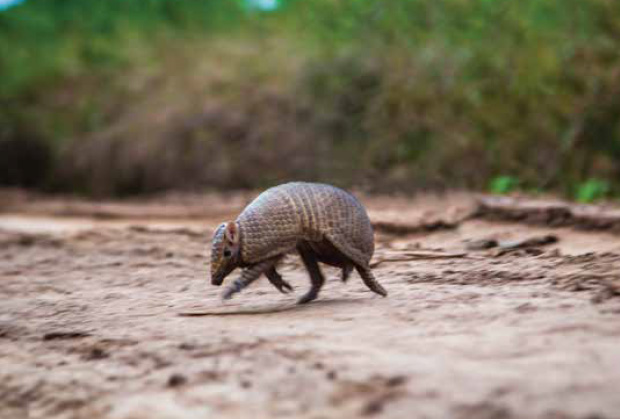
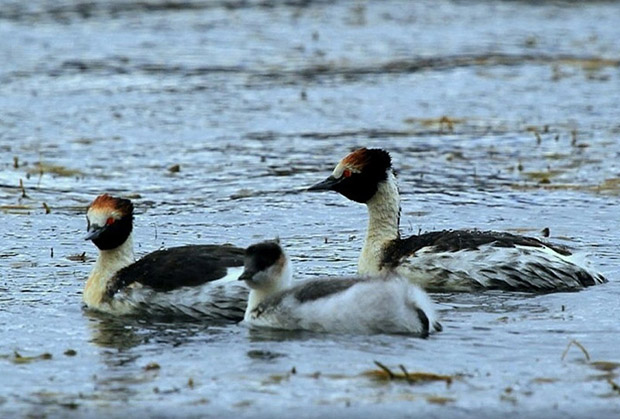
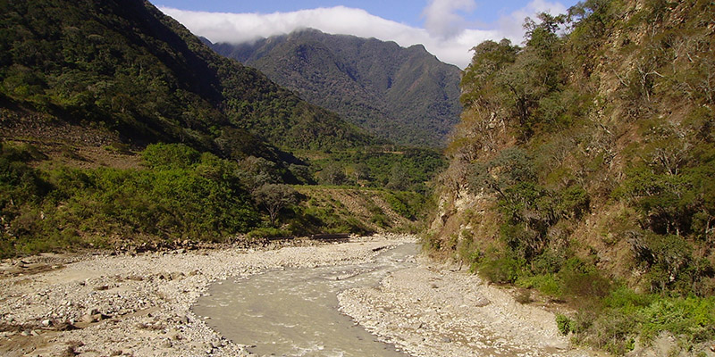

Tatú mulita - foto: H Povedano

Maca tobiano. foto: Eduardo Militello
El bosque nativo cumple funciones imprescindibles para el desarrollo de la vida, cuando éste desaparece, el suelo queda a merced de las adversidades climáticas, generando daños irreparables.Servicios Ambientales
Degradación: pérdida de productividad y biodiversidad ocasionada por distintos tipos de disturbios como los incendios, la tala indiscriminada, el sobrepastoreo y las plagas, entre otros. Incendios | Degradación |
Cada área tiene características ecológicas y ambientales diferenciadas: el clima, el suelo, las cuencas hídricas, la flora, la fauna, y la biodiversidad en general son indicadores de cada una de las áreas boscosas argentinas.
Si bien la mayoría de los servicios ecosistémicos que brinda la biodiversidad son difíciles de cuantificar, algunos que se pueden asociar a los bosques son la regulación de caudales, la protección del suelo, retención y ciclado de nutrientes, y el control de plagas. Existen también otros servicios o valores asociados a los bosques y la gente como los estéticos, culturales, científicos y económicos. Entre los servicios de la biodiversidad, las aves, por ejemplo, son componentes indispensables de los agroecosistemas, ya que exhiben un amplio rango de funciones ecológicas. La alta diversidad de especies y formas de vida, así como el alto número y movilidad, lleva a las aves a regular muchos procesos ecosistémicos y a responder rápidamente a cambios en los niveles de recursos. Entre los procesos ecosistémicos importantes para el funcionamiento y sustentabilidad de agroecosistemas se encuentran la dispersión de semillas, la polinización, el control biológico de plagas y la eliminación de residuos.
Conservar y cuidar los Bosques Nativos favorece a la diversidad
El resultado del proceso del uso inadecuado de los recursos naturales genera un nuevo paisaje, conformado por tierras agroproductivas y bosques alterados-degradados en su composición, estructura y funcionamiento, con suelos empobrecidos y/o desnudos, así como vertientes y cauces secos. Estos paisajes podrían permanecer en un continuo proceso de deterioro durante largos períodos de tiempo o generar un nuevo estado de equilibrio donde sea irreversible dicho deterioro, permaneciendo en esta nueva situación indefinidamente (MET, Modelos Estados y Transiciones).
El bosque nativo cumple funciones imprescindibles para el desarrollo de la vida, cuando éste desaparece, el suelo queda a merced de las adversidades climáticas, generando daños irreparables. Servicios Ambientales
La conservación de la biodiversidad es esencial tanto para la estabilización y el mantenimiento de los procesos evolutivos como para la preservación de las funciones de los ecosistemas. La biodiversidad posee valores éticos, estéticos y económicos directos, proporcionando alimento, medicinas y otros productos industriales, además es sostén de una gran variedad de servicios ecosistémicos con un valor difícil de cuantificar. Como resultado de la homogeneización y modificación del paisaje, la presencia humana ha disminuido la tasa de producción de nuevas especies y ha puesto en riesgo la supervivencia y la capacidad de adaptación evolutiva de muchas de las especies existentes. REDD +

Cuando el bosque desaparece, el suelo queda a merced de las adversidades climáticas, generando daños irreparables. foto: Mauricio Mattenet
Principales impulsores de pérdida y degradación de bosques nativos en la Argentina:
- AVANCE DE LA FRONTERA AGROPECUARIA
- SOBRE-EXPLOTACIÓN FORESTAL
- EXPANSIÓN URBANA
- PÉRDIDA DE CONECTIVIDAD Y TRANSFORMACIÓN DE HÁBITAT
- INVASIONES BIOLÓGICAS
- INCENDIOS FORESTALES
- CAMBIO CLIMÁTICO
"No solamente es importante conservar los Bosques Nativos sino restaurarlos".